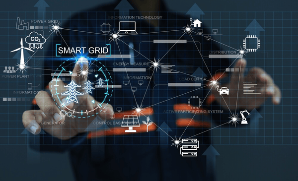

Zdjęcia

Inteligentne systemy energetyczne
Osiedla o zerowej emisji to przyszłość, która właśnie nadchodzi. Coraz częściej słychać o takich inwestycjach, jednak powinniśmy być świadomi, że w niedalekim czasie każdy nowy budynek będzie musiał spełniać wymagania dotyczące efektywności energetycznej i niskiej emisji. To nie tylko instalacje fotowoltaiczne na dachach, ale zintegrowane ekosystemy energetyczne z pompami ciepła, wymiennikami gruntowymi, magazynami energii, systemami BEMS czy lokalnymi mikrosieciami. Również architektura samych budynków ulegnie zmianie - oprócz niskiego zapotrzebowania na energię, budynki będą retencjonować wodę, ich dachy będą pokryte zielenią lub specjalistycznymi powłokami antysmogowymi, a do ich budowy będą stosowane materiały jak drewno CLT, beton niskoemisyjny czy izolacje biogeniczne.
Jakie elementy obejmują inteligentne systemy energetyczne?
- Infrastruktura obejmująca linie przesyłowe i dystrybucyjne, stacje rozdzielcze i linie zasilające odbiorców
- Urządzenia pomiarowe i urządzenia automatyki, w tym inteligentne liczniki
- Infrastruktura telekomunikacyjna i urządzenia do wymiany danych – sieci teletransmisyjne, bazy danych
- Systemy informatyczne do zarządzania siecią, np. metodyka pozwalająca na minimalizację przerw w zasilaniu oraz narzędzia umożliwiające analizę danych
Technologie wykorzystane w inteligentnych systemach
Inteligentne liczniki - jednym z kluczowych elementów są inteligentne liczniki, które pozwalają na bieżące monitorowanie zużycia energii przez odbiorców. Dzięki nim dostawcy energii mogą zbierać dane w czasie rzeczywistym, co umożliwia lepsze prognozowanie popytu oraz szybsze reagowanie na ewentualne problemy w sieci.
Systemy zarządzania danymi - kolejną istotną technologią są systemy zarządzania danymi, które analizują ogromne ilości informacji generowanych przez inteligentne liczniki oraz inne urządzenia w sieci. Dzięki zastosowaniu algorytmów uczenia maszynowego i sztucznej inteligencji, możliwe jest przewidywanie wzorców zużycia energii oraz optymalizacja jej dystrybucji. Technologie komunikacyjne - dodatkowo, technologie komunikacyjne, takie jak Internet Rzeczy, umożliwiają integrację różnych urządzeń i systemów w ramach inteligentnej sieci, co zwiększa jej elastyczność i zdolność do adaptacji do zmieniających się warunków.
Jakie wynikają korzyści z Smart Grids?
Korzyści dla odbiorców energii:
- Brak konieczności wizyt inkasentów
- Możliwość szybkiej zmiany dostawcy energii przez odbiorcę
- Łatwiejszy dostęp do informacji na temat bieżącego zużycia energii, m.in. za pośrednictwem specjalnego portalu internetowego
- Dwustronna komunikacja między odbiorcą energii a jej dostawcą
- Dostosowanie użytkowania energii do indywidualnych potrzeb
- Możliwość instalowania inteligentnych liczników
Korzyści dla operatorów systemów dystrybucyjnych:
- Większa efektywność pracy sieci i ograniczenie strat sieciowych
- Lepsza jakość dostaw energii elektrycznej oraz ograniczenie długości i liczby przerw w dostawie energii elektrycznej
- Efektywniejsze wykorzystanie istniejącej infrastruktury sieciowej, w tym zwiększenie możliwości przyłączania odnawialnych źródeł energii
- Możliwość uzyskania dokładniejszych wyliczeń dotyczących zapotrzebowania na energię
Perspektywy na Smart Grid
Inwestycje w technologie smart grid stanowią obecnie jeden z kluczowych kierunków rozwoju sektora energetycznego, także w Polsce. Przykładem krajowej inicjatywy w tym obszarze jest Program Operacyjny Infrastruktura i Środowisko, współfinansowany ze środków Unii Europejskiej w latach 2014–2020. W ramach programu wdrożono osiem funkcjonalności inteligentnych sieci, do smart grid podłączono niemal 4 miliony użytkowników, a także ograniczono zużycie energii pierwotnej o 1 054,11 GJ rocznie oraz uzyskano oszczędności na poziomie 97,6 MWh rocznie. Działania te są kontynuowane w kolejnych latach. W maju 2024 roku Ministerstwo Klimatu i Środowiska podpisało umowy o dofinansowanie inwestycji smart grid na obszarze Polski wschodniej. Choć nie są to jedyne realizowane w kraju projekty, dobrze ilustrują one kierunek zachodzących zmian, które bez wątpienia należy ocenić pozytywnie. Nie jest to jedyny projekt, który skupia się na wdrażaniu do Polski inteligentnych systemów energetycznych. Przykładem jest projekt „Smart Grid – Inteligentna Sieć”, którego celem jest testowanie nowoczesnych rozwiązań technologicznych w zakresie zarządzania popytem i podażą energii. Wraz z postępującą digitalizacją sektora energetycznego oraz rosnącym znaczeniem odnawialnych źródeł energii można spodziewać się dalszego rozwoju inteligentnych sieci w Polsce, co przełoży się na wzrost efektywności energetycznej oraz poprawę jakości życia obywateli.